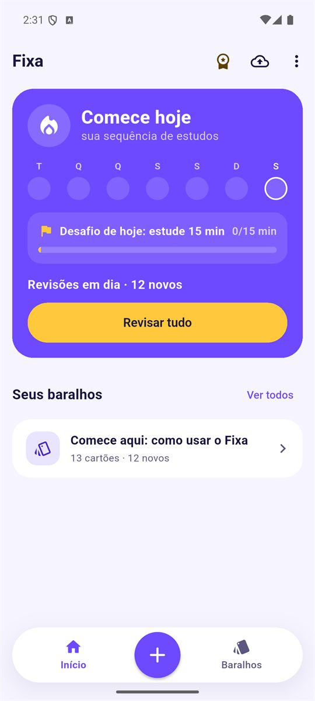
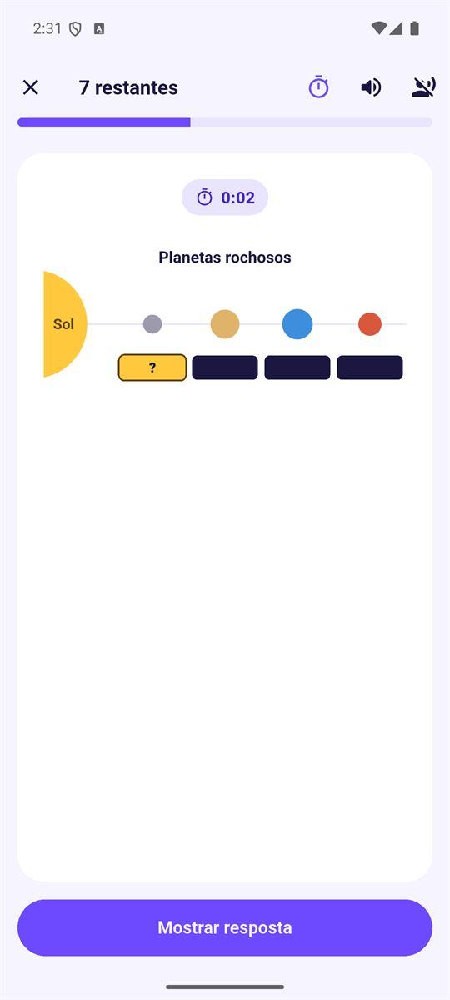

Fixa
Você estuda, o Fixa lembra a hora de revisar.
- Cartões ilimitados: crie quantos baralhos e cartões quiser, de graça.
- Revisão no dia certo: cada cartão volta pouco antes de você esquecer.
- Sem internet e sem conta: tudo fica no seu celular.
- Cartões com a sua IA: o app monta o pedido e você cola a resposta.
Para provas, idiomas, faculdade, concursos e o que mais você quiser aprender.


O que vem de graça
Revisão espaçada
Você diz se errou, achou difícil, bom ou fácil, e o app calcula quando mostrar cada cartão de novo.
Criar com IA ou importar
Use o ChatGPT, o Gemini ou outra IA que você já usa. Também importa planilhas .csv e baralhos .apkg do Anki.
Fotos nos cartões
Coloque uma imagem na frente ou no verso, da câmera ou da galeria.
Relógio do cartão
Veja quanto tempo levou para lembrar. Útil para cálculos e questões de prova.
Leitura em voz alta
Ouça a frente e o verso dos cartões, ótimo para idiomas.
Backup manual
Gere um arquivo com todos os seus cartões e guarde onde quiser.
Fixa Premium
Uma assinatura opcional, paga pela Google Play, para quem quer ir além. Criar, revisar e pôr imagem nos cartões nunca serão pagos.
Sem anúncios
Estude sem nenhuma propaganda.
Backup automático no Google Drive
Uma cópia por dia numa pasta escondida do seu próprio Drive, que só o Fixa enxerga.
Modo Prova
Diga a data da prova e o app monta as metas de cada dia.
Simulado
Múltipla escolha cronometrada, feita com os seus cartões.
Modo Ouvir
Estude ouvindo, sem tocar na tela.
Oclusão de imagem e estatísticas
Esconda partes de mapas e esquemas, e acompanhe seu acerto por matéria.
Seus dados
O Fixa não tem cadastro e não envia seus cartões para nós. Se você ligar o backup automático, o app usa a sua conta Google só para salvar e restaurar as cópias no seu próprio Google Drive. Leia a política de privacidade completa. Dúvidas: vgl.tecsp@gmail.com.